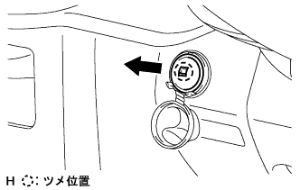

パワーアウトレット ソケットASSY 取り外し |
| 1. インストルメントパネルフィニッシュ パネル LWR CTR取りはずし |
|
クリップ<ｃ>2箇所、ツメ8箇所のかん合をはずし、インストルメントパネルフィニッシュパネル LWR CTRをとりはずす。
パワーアウトレツトソケットのコネクタを切り離し、インストルメントパネルフィニッシュパネル LWR CTRを取りはずす。
スクリュ３本をはずし、インストルメントカツプホルダを取りはずす。
| 2. パワーアウトレット ソケットASSY取りはずし |
|  |
ツメのかん合とコネクタをはずし、パワーアウトレットソケットを取りはずす
| 3. パワーアウトレットソケット カバー取りはずし |
ツメのかん合をはずし、パワーアウトレットソケットカバーを取りはずす。